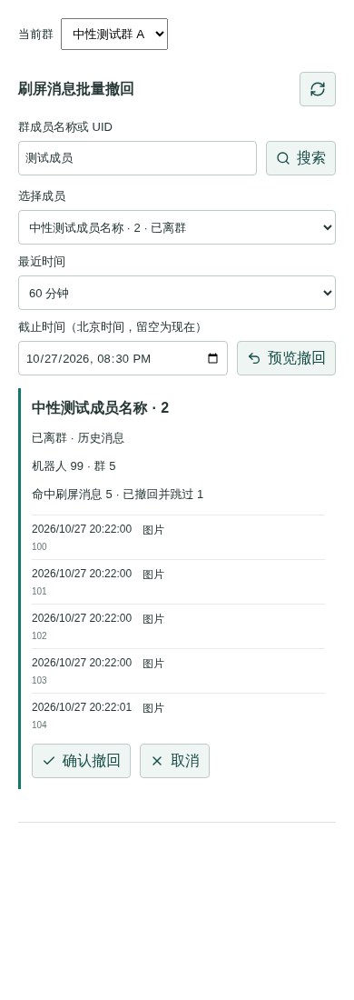
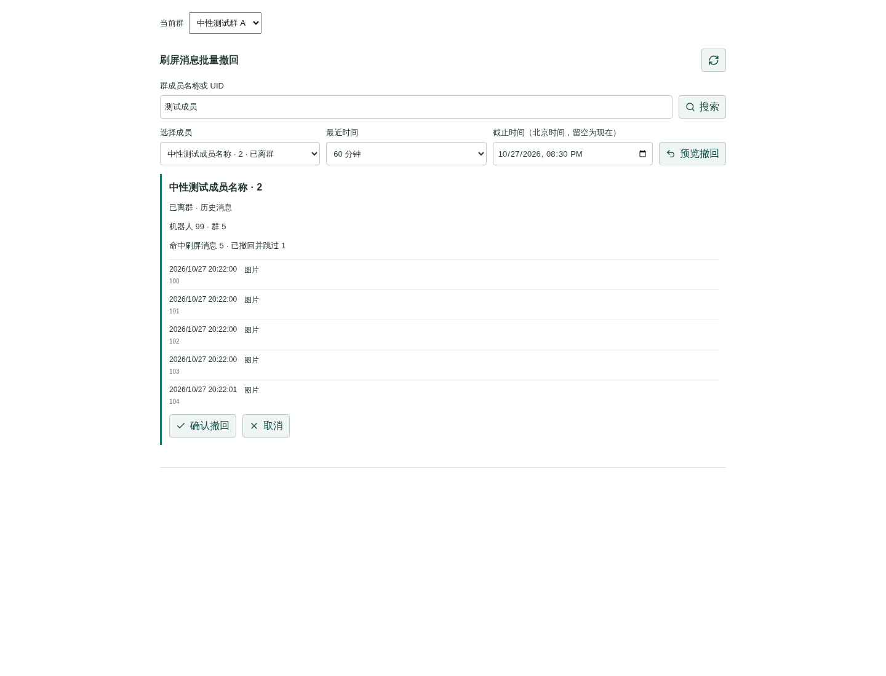
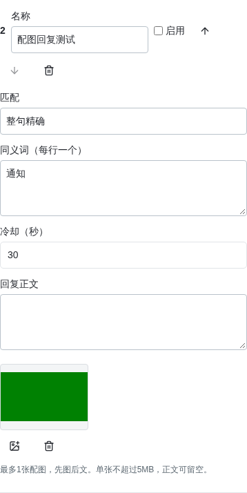
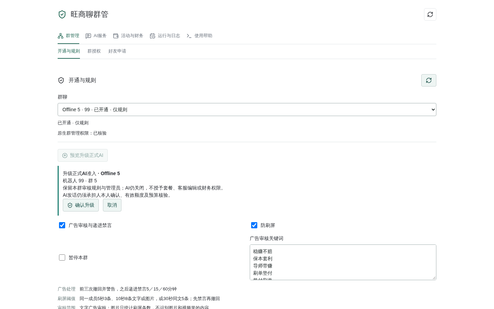
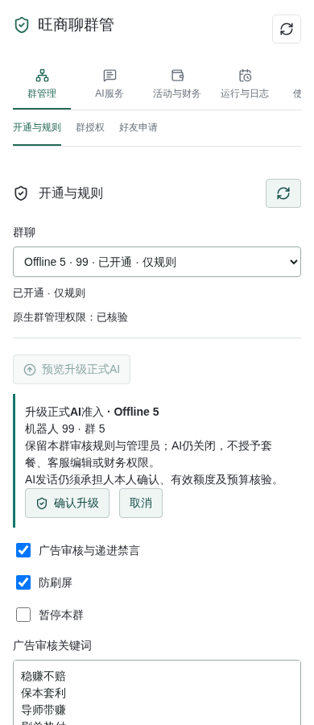
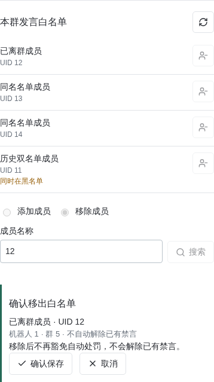

启用广告审核的已开通群，新正文含连续6位或更多数字时，先禁言1分钟， 再独立撤回该条，不走三次警告、不改变原警告循环、不自动拉黑。 全角数字同样识别，不跨空格、换行或分隔符拼接，不读取昵称或UID作为命中依据。 正常长编号和举报中的连续数字也会命中；管理员、机器人及有效白名单仍受保护。 已有原生禁言只撤回、不覆盖，明确拉黑短语仍优先其原流程。 固定识别不等OCR或AI；实时核权、历史限制、独立回执与未知不重试不变。 具体规则见内容规则，实际加载另见维护记录。
原生禁言名单只在HTTP锁内最终提交核权时查询，省去一次重复目录及名单预读； 名单未知或不完整仍阻断禁言，不缓存跨等待授权。撤回回执核对按账号单独运行 至多一个后台任务，不占用新规则派发，重载等待实际数据库工作退出。 原生并发、队列上限和消息正文存储策略不变。
开启广告审核的群对新消息匹配数字账号＋旺旺➕、正在开会打🐶／打狗、
红了发数字口令这些完整短语，任一命中：加入本群黑名单，
按本群已配置时长禁言，再撤回违规消息，不走三次警告、不自动踢人。
单独“旺旺”“口令”“888”不拉黑，引用、举报及原有受保护成员不扩大处罚。
必须核实本版本接入证据、原始账本、当前身份和群权限；不追罚历史、不由AI决定。
名单与意图持久化、同轮不重复续封，撤权／暂停／移除阻断未提交动作。
禁言与撤回回执分别记录，禁言失败仍独立核权撤回，未知不重试。
细则见内容规则，加载和验收见维护记录。
达到原禁言条件的普通广告，完成禁言决策后交给有界后台撤回， 同成员后续规则不等待这次清理；前三次警告仍须原撤回成功才累计。 排队、受理、拒绝与未知分别记录，撤回失败不抹去已受理禁言，未知不重试。 普通递进禁言减少一次重复成员预读，最终仍核验原生群管权限、 完整目录、冻结传输身份和目标角色；黑名单、防袭群及专属授权路径不变。 原256条撤回上限和队满同步兜底保留，不以离线提速承诺平台零延迟。 实际加载及证据边界见维护记录。
定时／关键词发送与广告替换的SQLite写锁等待移到工作线程； 发送回执收尾可以在取消时排空，只保存已知结果，不自动重试。 同步原生授权保留精确实时读取，读锁冲突立即拒绝，未改群规则与保护名单。 排行长文本按16条一批后台计算，批间让出消息循环并核验当前账号、群与账本； 取消、撤权或切换身份后的结果不进入共享缓存。计数、排序及白名单门槛不变。 这是响应性优化，不代表统计更快或真实高峰禁言已经验收； 旧1305.875毫秒停顿缺少堆栈，不把离线复现冒称历史确定原因。 加载和测量边界见维护记录。
同轮禁言决策及原触发处理已完成，后续刷屏只减少重复目录预读，不减少新撤回的原生核权。 去重绑定机器人、群、UID、传输身份、规则版本、时间窗口及测试代次； 新警告批次和未完成触发仍保留预检查，保护身份、警告次数与禁言循环不变。 精确重复的自动禁言先识别原记录，不为其他旧未知项发起远端核对或遮蔽原结果。 未知仍未知、不自动重试，不用已有禁言推断原请求成功。 本轮于北京时间21:37:58完整重启加载，21:38:16恢复在线； 不以离线压测宣称正式群高峰已提速；详见维护记录。
处罚记录保存安全错误分类、数值平台代码、异常阶段和起止时间，不保存响应正文或凭证。 请求超时、平台异常与成员离群分开解释；通用错误不能作为“已退群”证据。 已受理动作的后续状态查询失败，不把原受理回执降成失败或未知。 后台刷新黑名单时，对未知回执单独只读核对当前成员身份和平台禁言名单， 整群共用一次禁言查询、额外查询最多等待8秒；失败仍显示未确认。 当前在群、当前已禁言或当前未禁言都不证明原请求的成败、施罚人或准确时长， 不会改写原未知审计、补罚、重试、续封或移除黑名单。 额外查询不进入群命令或自动审核路径；历史未记录的具体原因不补造。
达到原禁言条件仍先禁言；批量撤回使用每机器人256条有界队列和一个独立清理任务， 不占原4个规则工作槽。队满回到原同步处理，不丢任务、不承诺无限容量。 待撤回显示“撤回清理排队中”，不冒称成功，并阻止这些消息继续触发AI或关键词回复。 普通警告／禁言循环、保护成员和最终原生核权不变；不等待下载或OCR判断刷屏。 刷屏预检查仅可复用1秒有效完整快照，真正提交新动作仍重新核权。 并发撤回只等待原请求回执，不重复发送。后台每5秒最多核对32条未知撤回， 仅按完全匹配的原生终态证据修正审计；平台受理不冒充手机已撤回，未知不重试。 数据库繁忙让出维护轮次，角色补查共用8秒预算；超时仍待核验，不推断分页完整。 部署、离线压测与真实运行证据分别见维护记录。
确定规则工作任务完成即唤醒下一项，保留4个并发、256项待办和同成员顺序； 健康快速通道接手可信入站事件后，普通聊天流水线不再重复等待相同处罚的网络调用。 交接不等于处罚成功，排队、执行、原生目录与OCR分别计时。 已有撤回回执只读复用，未知不重试；新撤回仍执行完整成员核验。 旧未知自动禁言仅在记录时长已过、存在匹配已提交未知终态、原生当前禁言名单明确无此人时 隔离旧项；保留未知审计，不重放原消息，只允许新的违规另建意图。 提交前重新核对当前禁言与权限，已有禁言、读失败、撤权或身份变化继续阻断。 不改普通处罚规则、名单、活动或财务；不能抢占已提交请求，也不以离线调度代替手机验收。 实现、证据范围与发布状态见维护记录。
本群广告审核开启时，单条消息超过7行（8行及以上）按广告处理，沿用原撤回警告及递进禁言。
实际换行才计数，空行与末尾空行计入，CRLF只计一次；屏幕自动折行和字面\n不计。
不要求关键词、联系方式、下载或OCR，普通多行聊天及引用举报也会命中此格式限制。
7行及以内不因本条处理，其他广告关键词及推广组合仍独立识别；取代原5行阈值。
关闭广告审核则停用，群主／管理员／机器人及有效白名单保护不变。
不回放旧消息，发布与实群验收另查维护记录。
受限视频与合并转发单条仍只撤回；有真实入站账本核验的刷屏证据时， 不再被「仅撤回」分支跳过普通警告／禁言循环。达到禁言条件先禁言，再独立撤回、最后提示。 已撤回的同轮消息不重复提交，但仍是刷屏证据；不下载视频、不等待OCR、不改阈值或名单。 00:42:09北京时间热加载，1187项回归通过、2条件跳过； 不补罚历史消息，新的实群自动禁言及手机展示没有据此宣称通过。
服务端可用实例私有blacklist_prefixes.json明确授权机器人、群及昵称前缀，
固定7天10080分钟；不开放AI或群聊修改这个授权。只按最新完整目录的真实群昵称开头匹配，
P／p不区分大小写；不匹配消息正文，不推断换号者身份。
检查当前成员、可信入群通知唤醒及每60秒补查，不在每条消息下载图片或等待OCR。
同群复用有界黑名单任务，每轮最多提交20次新处罚，其他待办留到后续轮次。
群主、管理员、机器人受保护；手动白名单冲突保留并单列，不擅自删白。
入黑和禁言独立审计，新的前缀处罚意图与真实入群轮次、管理命令分别命名；
同一名单周期一次，未知不重试，已在禁言的不续长或缩短。
后续真实重入继续由原黑名单流程核验后处理，不踢人。
新前缀处罚要求本群原黑名单时长仍为7天，改为其他时长会暂停新前缀处罚，不擅自修改时长。
规则开启时手动删黑但保留匹配昵称可再次自动纳入；停用私有规则不自动删黑、解禁或删除审计。
以上为实现契约，已加载与真实执行证据另查维护记录。
2026-11-03新增独立禁言专属授权：服务端明确授权且仍列入专门汇报的成员，
仅可在指定机器人和群用真实@成员 禁言128禁言128分钟（1至4320整分钟，最多3天）。
@成员 禁言4320为3天，超限拒绝；只扩展此专属入口，普通自动处罚上限不变。
不授踢人、解禁、名单、规则或财务权限；普通管理及汇报名单本身不授权。
自己、群主、管理员、机器人、有效白名单、黑名单和已有禁言受保护；
提交前重新核权，未知不重试。此段是实现规则，部署与实群验收另核对维护记录。
全部私信菜单、好友自动审批与欢迎、个人知识、客服、私信AI／管理员指引、 财务聊天及图片录入退役；历史业务资料不删除。 群内固定命令、真实@／可信原生回复黑白名单与WebUI规则、图片、活动、邀请记账／结账保留。 普通群管理不自动获得全局后台访问权，完整旧→新映射和 当前命令树为操作入口。 已于2026-11-02 01:48北京时间完整重启加载；禁言优先已加载， 防袭群六个正式群仍关闭，完整实群验收未完成。
普通广告和刷屏共用每轮前三次撤回警告，再禁言1／3／10分钟，10分钟处罚结束后重新三次警告。 刷屏阈值为同成员3秒5条、10秒15条，或30秒5条同文；媒体参与速率计数。 需要禁言时先核权保存意图并提交禁言，再独立撤回，必要提示最后发。 禁言未知或拒绝不重试；撤回仍独立核权，通知失败不改写受理禁言。 自动白名单新资格按北京时间昨日TOP20且至少101条有效文字，不从第21名补位； 30秒核对与刷新、同成员30秒最多一条、同文5分钟去重不变。 有效聊天刷新7天保留，连续7天无有效文字退出，已保留者无需每天重新上榜；总人数可超过20。 手动白名单不变，黑名单优先；名单、原生管理及机器人身份保护不因提速放宽。
图片只经WebUI上传：关键词每条1张、定时每计划最多3张每次轮换1张， 静态JPG／PNG／WebP每张原图≤5MB，正文≤2000字。 关键词精确优先，其余按保存顺序仅命中一条，默认同群同规则冷却30秒； 命中、冷却或发送失败均不转AI。先图后文，部分／未知不重发。 三条错峰为三个独立计划，默认00／20／40分，各60分钟，应用时间只改草稿，仍需预览确认启用。
已加载修复把图片满4项就跳过改为有界等待：全插件64项、单账号32项、单群16项， 最多两个执行任务，按账号及群轮转。排队仍消耗原消息30秒处理时限，不阻塞刷屏判断或先禁言； 超载、超时及撤权明确计为未检查，既不算正常图片，也不因未检查直接处罚。 审核工作记录只清理超过90天、结果明确且没有未决关联的部分；未知回执、 渐进处罚循环和原生操作幂等继续保留，历史消息不会因清理后再次到达而重新处罚。 后台小批次清理，写锁争用退让，不在每条消息上清理数据库。 细节与容量边界见内容规则及 数据库维护。 2026-11-02北京时间已加载，不据此声称生产漏检已消失或真实端到端验收通过。
内容规则的“已处理消息”不等于撤回或禁言成功。执行前成员核验失败单独显示， 保留安全错误类别及数值平台错误码；执行拒绝和结果未知不再写成“仅记录”。 旧的“仅记录”记录改为“旧记录未确认执行结果”，不倒推或改写历史结果。 规则工作日志读取实际留存结果，不再统一记录completed；收件分发结束记录dispatch_finished。 已受理的原处罚不会因后续警告通知失败被抹去，也不自动重放失败或未知请求。
真实入群通知持久化后直接唤醒有界、按群独立的检查，不等待普通群目录轮询完成。 非黑名单成员的入群不请求完整成员和入群目录。普通成员、发言白名单不会授权处罚； 命中黑名单仍须验证真实新入群、完整成员目录、创建者和机器人当前管理权限。 同群并发成员读取共用一次在途核验；未说明原因的-1只读重试一次，持续拒绝短暂抑制重复查询， 不回退旧名单，不承诺平台限流或网络故障期间零延迟。
已绑定本群的管理员可在关闭普通群回复时使用真实@／可信回复的黑名单、移除黑名单， 以及真实@白名单和黑名单列表。仅放行这些固定管理入口及一条受控结果回复， 不打开普通机器人聊天，不跳过命令本身的权限、身份及目标保护。 加载时间和实群效果另查维护记录，离线通过不等于真实重入禁言验收。
黑名单命令必须实时读取完整成员目录，不能用旧名单替代管理员和目标身份核验。
成员读取遇到平台未说明原因的 -1 拒绝时，最多等待1秒再读取一次；
只重试这个只读步骤，不重试禁言、撤回、名单写入或未知回执。
鉴权失效、二级安全验证、限流、网络超时及成员资料冲突不使用该重试。
等待后仍须核对原账号、服务状态和权限，取消或撤权立即停止。
若平台持续拒绝，群内提示明确说明成员接口不可用，不再错误提示“请检查命令”；
后台也说明未使用旧名单继续操作。此前失败的命令不会自动重放。
后台重入检查发现机器人已失去群管权限、群已停用或机器人已离群时，
将该待处理通知标记为撤权，不再每轮为它重复请求成员目录；以后恢复权限也不重放它。
已开启广告审核的群沿用固定规则识别三类组合：指向符号配整句“几十款／多苔有扶”招揽、 “拿扶／拿福＋5至12位账号”，以及5至12位中文／阿拉伯数字联系方式配定时爆料网红视频推广。 兼容全角、空白、零宽字符及指向表情的肤色；不将任意箭头、中文数字、普通提问或举报引用 一律撤回，也不用这些数字解析成员身份。字面关键词仍按原配置，不增加AI调用。 只处理新消息；现有广告开关、白名单、管理员／机器人保护及递进处罚不变。 共享识别器补修不等于已证明每个群收到所有消息，加载及实群效果另查维护证据。
新增入口：旺商聊管理 → 处罚记录 → 刷屏消息批量撤回，不替换现有禁言和审计入口。 选择机器人和群，搜索名称或 UID，明确选择一名普通成员，选择最近5、15、30或60分钟。 默认截止到现在，也可指定北京时间的历史截止时间；整个范围必须位于最近24小时内。 可搜索已离群成员的原昵称或 UID；结果明确标注“已离群”，只使用本机器人、本群 最近24小时的原始消息和先前完整成员目录验证过的 UID／原生账号绑定，不猜昵称身份。 点击“预览撤回”核对成员、命中条数、北京时间和消息ID，再点击“确认撤回”。 只选择原始账本中可重新核实的刷屏窗口，不混入普通聊天，也不接受客户端任意指定消息ID。 只处理当前机器人、当前群的消息；单次最多500条，超限需缩短时间后重新预览，不静默截断。
这是后台管理员明确确认的手动撤回，白名单成员也可以处理； 不移除其白名单、不加黑名单、不追加警告或禁言。群主、管理员和机器人仍受保护。 预览5分钟失效，绑定操作者、机器人、群、成员原生身份、权限版本及确切消息内容，只能使用一次。 确认后同一机器人最多运行一个批次，逐条串行撤回，上一条返回后再等待3—5秒； 不并发、不瞬间批量请求，新批次沿用该机器人的冷却时间。保守限速不能保证平台不触发风控； 每条重新核对权限、成员身份和账本。可“停止后续撤回”，已在途的请求单独保留回执。 已离群目标必须仍不在最新完整目录中，原账号也不能被其他当前成员占用； 重新进群、身份绑定冲突或成为机器人会停止旧批次，需重新核对并预览。 该能力仅供后台明确确认的历史撤回，不放宽普通自动撤回、黑名单或禁言权限。 接入器契约变更部署时需要一次受控完整重启，不能只热重载插件。
进度区分平台受理、独立核实、跳过、未知、拒绝和未提交； 平台受理不代表手机已确认消失。已有成功回执的消息跳过； 已有未知或拒绝的撤回请求不重复提交。未知、拒绝、撤权、暂停、目标晋升或身份变化会停止后续操作。 任务与回执持久化，关闭页面不丢失进度，重启后不自动续跑中断批次； 可刷新核对，之后需重新预览才能提交新的批次。过期或平台拒绝的消息不能保证撤回成功。 此处描述实现行为，不代表已部署或完成真实群验收。


修复历史“结果未知”阻断同一成员所有后续入群的问题。同一次真实入群只处罚一次： 重复通知、重复命令、重启及改名不会重发旧禁言。旧请求仍在途、没有完成审计， 或入群实际发生在旧请求完成之前，继续暂停核对，不自动重试。
旧禁言请求已结束且有不可修改的完成审计时，之后新发生并经平台入群记录、 完整成员目录及当前权限核实的真实重入，可以创建独立的禁言意图， 按本机器人＋本群当前配置时长重新禁言，不再被历史未知记录永久挡住。 原来的未知状态、回执与审计原样保留，不改成成功；新命令也不能借此重试未知处罚。 名单移除、目标晋升管理员、机器人失去群管或群暂停仍会阻断提交。 不增加自动踢人，不放宽普通禁言24小时上限，也不在普通发言时循环续封。 平台受理、当前在禁言名单、手机显示和未来实际到期是不同证据，不能相互代替。
新增独立入口 群管理 → 发言统计，按所选机器人和当前群隔离。 北京时间每天00:00切换当天，从零计数；只能查看今日和昨日， 更早的统计明细、昵称与游标自动清理，停用账号的统计同样到期清理。 这是统计专用存储，不删除消息账本、处罚审计、财务或活动记录。
群统计显示有效消息数、活跃人数、文字／表情、图片、视频、转发数量、 小时分布及当日前30名。按消息逐条计数；撤回及违规消息、机器人消息、 已识别管理命令不计，最近30秒等待核对，后台约20秒增量收集， 页面约30秒刷新。显示“正在补齐”时不能把局部结果视作完整数据。 重启沿用已保存的去重游标，仅从现有可信账本补齐昨日及今日， 不重放消息或处罚，也不保存正文和图片内容。
成员统计在同页输入名称或UID搜索，选择明确成员后查看当日／昨日条数、 首次和最近发言及小时分布。当前完整目录有缓存时支持无发言成员； 最近两天发过言的已离群成员也可查询。没有记录显示0，不从其他群猜人。 本页活跃前30名不是自动白名单授予榜：自动白名单仍按昨日有效文字榜， 保留每30秒最多一条、同文五分钟去重；前20名且至少101条新获自动资格。 已达标者跨日保留，每次有效文字发言刷新7天保留期，连续7天无有效文字聊天退出； 无需每天重新达标，总人数可超过20。只增加7天活跃时间摘要，不额外保留7天正文。 手动白名单不变，明确移出不按旧资格加回，黑名单优先；加载状态另核对维护记录。
增减其他机器人管理员不再使已确认的定时发言和关键词回复永久失效。 仅在原计划绑定当前群版本、同一入群代数且原创建人仍获授权时， 与管理员变更在同一事务内更新版本绑定；后台总控创建的计划不依赖某一群管理员。 已在途操作仍受旧版本阻断，下次轮次重新校验最新目录、原生权限和主动发送授权。 创建人被撤权、群暂停、离群或机器人失去群管权限时不会自动恢复计划； 此前已过期的版本也不会因再次授予权限而自行复活。
历史漏发不补发，结果未知不重试。管理员可在原群预览并确认保存未改动的计划， 恢复下一次未来时刻；文案、图片与发送时刻可保持原值。 同账号跨群计划沿用串行发送、组间至少3秒间隔，图片先于正文且间隔至少1秒。
群内真实@一名成员 黑名单、@一名成员 白名单等固定管理指令，
管理员发送的本条指令消息与机器人处理结果沿用约12秒自动清理机制；
不会因此撤回被@成员的其他消息。仅清理展示，不删除原始账本、处罚回执或审计，
也不重试未知处罚。下方10月24日“保留管理员原消息”描述的是当时版本。
发送者仍须同时具有本群原生群主／管理员身份和本群机器人管理授权；
只有原生群管身份不会自动获得机器人权限，拒绝提示会说明这两个条件。
默认广告审核关键词在原列表基础上追加的来、私我、大秀；
汇赢1417872、鼎峰1459534、真龙1516387同步追加这三项，
保留各群其余关键词、组合规则、图文计划、成员名单及管理授权。
这些是审核关键词，不是关键词自动回复，也不改变既有警告和禁言递进规则。
管理员原生@一人或回复其可核实的同群原消息发送黑名单，直接登记名单，
不立即禁言或踢出；以后可信真实重新入群才按本机器人本群的已确认时长禁言。
先移除另一名单再添加，不能同时新加黑白名单；群主、管理员和机器人仍受保护。
移除黑名单不自动解禁，解禁也不会移除名单。
23:39:48北京时间已读回确认：本次授权的三个群仅对齐群管拦截规则和重入禁言时长， 使用7天（10080分钟）；一条指定白名单已移除，其黑名单保留。 这是三个群的配置快照，不把产品默认29天改为7天，也不自动同步其他群或成员名单。 未复制图文计划或关键词自动回复。离线回归通过不等于实际禁言已测； 本轮未执行新的实群处罚，完整范围见维护记录。 下方较早轮次的“无真实名单操作／历史交集保留”仍按原日期解释。
本节为2026-10-23当时契约：黑名单不再踢人，每次可信真实重新入群直接禁言并留群。 北京时间2026-10-23 20:02:56完整重启已加载（PID3317496，NRestarts=0），在线配置流程验证通过； 本轮真实新重入／禁言处罚未测，不能把离线回归或设置读回当作实群处罚验收。 当日16:53:53加载及随后“三踢后长禁言”验收属于旧策略历史，不能作为新规则通过的证据。 用户后续回复「看得见」，记录为对应展示的用户手机显示确认，不扩展为其他画面或新策略验收； 29天后的真实到期尚未发生验证，不能以手机显示、平台受理或当前禁言状态替代。 黑名单绑定同一接收机器人账号＋同一群＋经核验的目标身份，不能跨群或跨机器人沿用。
列入后，只有可信的实际重新入群才触发该路径，首次及以后每次均按本机器人本群已确认的 时长直接禁言并留在群内，不再踢出，不以前三次踢出或历史成功次数作为前置条件。 普通发言、重复入群通知、重启或重复添加不触发处罚或续封。时长修改只影响确认后新的可信真实重入， 不自动重设已有禁言、不追罚已在群成员、不追放历史通知，也不建立每日续封任务。 回执未知时暂停该次处理，先核对原回执与平台状态，不重试、不清历史或伪造成功。 2026-10-26起，已完成请求之后新发生的可信真实重入按上方隔离规则单独授权。 后台移除名单不解除已有禁言。2026-11-02北京时间已加载修复： 机器人命令／后台管理入口核验解禁后同时移出本群当前黑名单， 名单版本变化、撤权、未知回执或核验失败不强删，分别显示平台及名单结果。 手机端直接解禁暂未接入可信事件同步；自然到期和查询未禁言不会自动删名单。
| 旧策略（2026-10-23较早轮次，仅历史） | 当前契约（已加载，真实重入未测） |
|---|---|
| 前三次真实重入成功踢出，累计到三 | 每次可信真实重入直接禁言并留群，不再踢出 |
| 第四次及以后固定29天禁言 | 首次起使用本机器人本群已确认时长；默认29天，可设1..41760整分钟 |
| 成功踢出计数决定处罚阶段 | 历史计数及回执保留作证据，不再驱动新处罚阶段 |
| 后台「群管理 → 规则 → 黑名单」 | 后台「群管理 → 规则 → 黑名单设置」，名单及时长修改仍须预览本人确认 |
群主、管理员、机器人受保护；唯一例外是精确授权的隔离fixture， 仅用于限定机器人、群、目标、动作及有效窗口的测试，不授予正式群例外。 发言白名单不能覆盖黑名单。普通广告／刷屏的自动踢出仍禁止； 普通禁言的24小时上限不变，1..41760分钟的范围只限这条黑名单重入规则，不能用于延长普通处罚。 管理员指引AI只能说明步骤，不能查询实时名单、执行、代确认或声称操作成功。
验证层级：离线综合回归1229 passed／2 skipped／1条audioop警告； 后补权限提示257 passed／2 skipped，覆盖重叠不累加。边界／换算、隔离、确认与保护等离线覆盖不等于真实处罚。 三项并发补修已验证：旧通知不套新时长、最后同步权限fence、确证未提交不误记unknown； 真正unknown保留、不重试。20:10:45测试群1459282在线41760→60→41760的 读取／预览／本人确认提交／读回通过，预览不写入，默认已恢复。 首次两次读取因接收机器人为普通成员被409保护拒绝，无写入；已补具体权限提示， 成员操作重新搜索，时长操作重新预览。本轮无新踢人或禁言实际处罚。 20:24:00保护复核完成，其他保护面匹配；测试版本217→220和已审计鼎峰后台并发version4／5保留， tenants原始整体hash不全同，不宣称正式群从未变动。详见维护记录。 仍未验证的是本轮新的真实重入／禁言及未来真实到期。旧三踢、手机显示确认与新规则证据分开读取。 本次文档更新不执行生产操作，重新生成教程／索引／PDF，不向dist同步。

定时区域新增 三条消息 · 每小时循环，可选择三个已有计划， 或用 新增三条计划 创建三个默认关闭的草稿。每条有独立正文、配图和每小时发送分钟； 默认第1条00分、第2条20分、第3条40分，相隔20分钟，每条60分钟循环一次。 可以改为不同间隔，例如00、15、45分，对应15／30／15分钟（最后一段跨到下一小时）。 三条必须不同且按所列顺序绕一小时；应用后为全天24个北京时间固定时刻， 会替换所选计划原先的时段／时刻。不想全天发送时继续使用单计划的每日时段模式。 应用三条时间 只填入草稿、保留各计划启用状态，最后仍须 预览修改 → 确认保存。 不会自动补内容、启用计划或向任何群发消息；原有配置不因上线自动改写。 三条错峰是三个独立计划，不是同一计划一次连发三图。新计划须分别启用， 核对00／20／40分及正文配图后预览并确认保存，不能仅点“应用三条时间”。
2026-10-25调度修复：仅修改广告审核、防刷屏或拦截词时，原本有效的图文授权随群版本原子更新， 不再要求重存轮播。改管理员、暂停、退群／重新入群、权限丢失或原授权已过期时不自动续接， 后台显示授权变化并要求重新预览确认；已在途的旧版本任务仍会停止。 同一机器人在多个群同刻到期时逐群排队，图片确认后至少等1秒发正文，一群结束后至少等3秒开始下一群。 到期后最多允许120秒完成发送前入队／权限核验；超时跳过并记录原因，不补发错过时段。 这是本地节流，不是平台限流额度承诺；被拒绝、未知或部分送达均不自动重试， 未知／部分结果继续暂停核对。后台显示最近一轮发送前跳过或拒绝提示。
上传失败：检查JPG／PNG／WebP静态格式、原图≤5MB、当前机器人／群及权限； 等进度结束或超时控件恢复，先查是否已有素材／保存结果，再由本人重新选图、预览确认。 结果未知先暂停核对，不重复上传或提交旧令牌；未保存、未启用都不代表已投放。 选错群先取消草稿或等待收图，再重新选群；没有后台权限不索要总控密码。 本次只更新说明；图片与三条错峰的新集成／手机客户端验收仍须另行计划， 下方旧截图与日期证据不能替代本次验收。


未启用模型审核时，可信新消息中的高置信广告、关键词及多词组合规则与刷屏 走独立有界队列，不受聊天／AI回复排队影响。执行前仍核对当前群规则、原生权限、 目标身份及发言白名单；管理员、群主和已接入机器人仍受保护。 重复消息不重复处罚，未知回执不自动重试，也不补罚热加载前的广告。 组合规则要求所有词同时出现，规则名称不是关键词。前三次成功撤回只警告的递进 模式不变，不能把“命中”或“任务完成”当作平台已撤回／禁言。
服务端维护 open_store.py 中版本化的 DEFAULT_GROUP_RULES。版本1启用广告审核、
防刷屏，含21条高风险短语和11条多词同时命中的组合规则，覆盖收款截图招揽、
账号出租、验证码接码、视频代发及项目群引流等。不把“宋、58、小额、兼职、
蛋糕”等宽泛词或域名后缀作为模板的独立拦截词；举报、引用和反诈提醒继续受保护。
原生“开通／认领”和服务端“规则开通”在同一授权事务内初始化模板： 只有仍为初始空规则的群才复制；已定制的规则保留。仅发现或加入群不生效， 未满足邀请／服务端准入、原生权限或版本检查时不写入。 每群获得独立副本，后续修改、暂停恢复及重启不覆盖其他群；更新模板也不批量同步 已开通群。服务端规则开通的确认令牌同时绑定模板内容和版本，模板变化须重新预览。 激活审计保存实际规则及模板版本，历史消息只作离线分析，不重放或补罚。
机器人主动入群时，服务端可在“开通与规则”选择一名经实时原生目录核验的群主／管理员，
预览并确认“规则开通”。后台入口为 rules_provision_preview、rules_provision，
只接受机器人账号、群号、租户版本、管理员 UID 及确认令牌，不接受套餐或任意配置。
令牌绑定后台操作者、成员代次、版本及管理员真实发送者身份；撤权、换身份或超时均失效。
关键词只在群内触发，普通成员可用，按机器人账号和群隔离。 支持同义词、整句精确和包含匹配，不使用 AI、正则或语义猜测。 精确优先，其他按保存顺序，只命中一条；默认同群同规则冷却30秒。 “广告审核关键词”和“关键词自动回复”分别存储。业务回复和广告不按管理命令12秒撤回。
服务端在“开通与规则”或“群聊与热群AI”选择已开通的仅规则群，
点击“预览升级正式AI”，核对机器人账号、群号后“确认升级”。
接口为 ai_admission_preview、ai_admission，只接受账号、群号、
租户版本及确认令牌；群聊命令和普通管理员不能调用此服务端入口。
群及服务必须未暂停，机器人和现有授权管理员须仍有经实时完整目录核验的原生管理身份。
十分钟单次令牌绑定后台操作者、租户完整快照、成员代次、管理员发送者身份与服务版本；
离群、撤权、改规则、身份变化或版本冲突后须重新预览。


白名单
@一名成员 白名单
移除白名单 当前名／保存旧名／精确UID
选择白名单 本次搜索结果序号
确认白名单 预览令牌
群内直接添加在写入前和事务提交前复核原生管理权、目标真实@及完整目录。
后台添加的搜索、选择、确认均核验完整原生成员目录；移除核对本群已保存记录，不要求目标仍在群。
两种操作均重新检查权限和版本。预览十分钟有效，
确认必须使用新消息；切换群、重新搜索、取消、操作者／机器人权限变化及名单版本冲突均拒绝旧选择。
仅添加还会因目标成员身份或名称变化拒绝旧选择；
移除目标只绑定已存UID＋peer＋名单版本，不因目标改名或退群拒绝，
操作者和机器人的当前权限仍须强制核验。后台接口 member_whitelist
添加仍接受版本化群作用域、名称查询、服务端选择令牌及结果序号，不提供任意成员账号写入；
移除的精确UID查询仅定位同一作用域的已有记录，不能用于添加。
变更持久化并独立审计，重启保留；已有服务端白名单记录兼容，不被覆盖。
2026-10-22源码补充：member_whitelist守卫在authority_guard()后，将
service.store.tenant(account, group)与原租户完整快照比较，变化即拒绝tenant_changed。
入写前及事务提交前均复用该守卫；已纳入上述最终回归并随完整重启加载。
后台“群管理 → 规则”的仅白名单成员可发视频按机器人和群独立保存，旧群缺省关闭。 开启后，仅对平台识别的真实视频消息执行：非白名单普通成员的视频撤回， 不因此发送警告、增加广告违规次数或禁言；手动及有效自动白名单可发视频。 群主、原生管理员和机器人仍受保护。图片、表情、语音、文件名不按视频处理； 刷屏规则独立适用。后台保存前复核版本，旧页面漏传已存在的开关会拒绝，避免静默关闭。 快速审核与普通消息处理共用同一原消息操作号，重复事件不重复撤回，未知回执不自动重试。


群内默认当前群。本群授权管理可维护：
关键词回复
添加回复 名称|精确|词一/词二|回复正文
添加回复 名称|包含|词一/词二|回复正文
修改回复 序号 名称|精确|词一/词二|回复正文
启用回复 序号
停用回复 序号
删除回复 序号
确认回复 预览令牌
定时广告
添加广告 名称|每日|09:00,18:00|已确认文案
添加广告 名称|间隔|09:00-22:00|60|已确认文案
修改广告 序号 名称|每日|09:00|已确认文案
启用广告 序号
停用广告 序号
删除广告 序号
确认广告 预览令牌
所有增删改和启停先预览，再由同一发送者在同一对话两分钟内确认。 版本或权限变化则拒绝旧提交。新规则默认关闭，不自动填链接、投放文案或开启正式群。

计划、游标及发送意图持久化。同一计划时刻只认领一次；断线、重启不补发错过时刻。 未知发送回执暂停核对，不盲目重发。暂停、离群、撤权、失去机器人原生管理权限、 关闭群回复或主动发送授权都停止投放。离群清理本账号本群的规则与游标，保留最小发送审计。
只访问固定 https://pc28.world 域名及固定 GET 接口：
最新开奖、历史（10／20／30／50期）、遗漏、长龙、第三方下期预测。
遵守每 IP 每分钟60次上限、短缓存及429退避，内部保留来源标识用于核验；接口说明：
pc28.world/apidoc。
只采用“接口预测＋走势解读”，不自建选号算法。空预测、过期、休盘、超时或失败时明确说明， 仅展示已核验历史或查询指引，不编造号码、下期概率或必中结论。 群内输出不展示来源域名或链接，包括模型续答及固定失败模板； 保留“第三方数据仅供参考，不保证下期结果”的提示，不影响内部来源核验。
每轮最多一次工具查询、两次模型请求，整轮45秒。
两次模型请求独立核价、计次、预算预留和结算；续调仅复用本轮冷却资格。
第二次不能调用则展示固定模板的已核验数据或失败原因，不豁免额度或权限。
第二段生成被截断或只返回思考草稿也走同一模板，不发送半成品；历史摘要只统计
已核验期次的大小、单双次数，不构造预测算法。实际已发出的两段请求仍分别结算。
group_ai.py在工具续调和投递前复核原生会话快照，删除、切换或编辑使旧快照失效。
续调已发出但结果未知时以model_result_unknown锁定群AI，保留费用状态，
不自动再次调用；不能用固定模板回退绕过这道守卫。
历史统计和长龙分类直接使用确定性摘要，不再由第二段模型计算次数或把周期、
交替误写为连续；这两类正常查询只需一次模型请求，同样隐藏来源链接并保留随机性提示。
仅在测试群 1459282 的既有三账号受控窗口验收；缺少原生管理权限、预算、
承担人本人确认时报告阻断，不自动扩大授权。验收结束恢复窗口和临时设置。
不改变正式群 AI 开关，不修改财务账本，不重启连接器。
发布前保留源码、静态页、配置和最小审计快照；通过全量回归与浏览器检查后再加载插件。
scripts/check_wsl_warm_dialogue_model.py 使用当前热群配置、人格、真实模型和真实
PC28接口，但以独立数据库、模拟群权限与投递核验模型和业务链路，不能代替实群
原生发送验收。费用计量保存在实验库；供应商真实请求仍可能扣费。
保留一分钟冷却，单次实验最多16次模型请求；--cases 可选择定向复测，
不将超时或空预测说成正常查询成功。详细方法见测试与验收。
测试群 1459282 的既有三账号已核对在线。成员选择接口不列出机器人自身，
不能把选择列表只有两名用户误判为机器人离群。
当前原生机器人群管理权限缺失、测试群 AI 未由服务端开通、承担人未本人确认。
因此本轮实群对话、昵称及12秒撤回验收尚未执行；没有为验收提升群权限、代为确认扣费、
发送广告或调用真实模型。需补齐上述条件后再开启既有三账号受控窗口。
配置、源码、财务只读证据及测试结果保存在私有发布目录
/opt/backups/wsl-service-rules-20261020-jq1hZG，回滚步骤见同目录 ROLLBACK.md。
回滚仅恢复本次涉及的代码、静态页及经版本核对的 AI 绑定；不得覆盖整库、财务账本、
后续业务变更或其他插件。通过原有插件管理接口仅重载群管插件，不重启连接器。